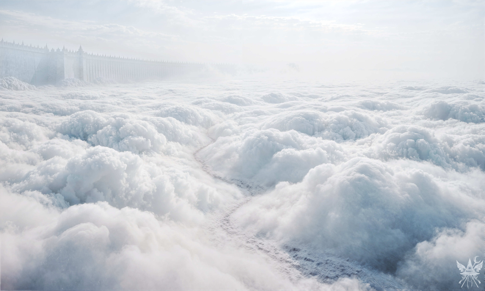
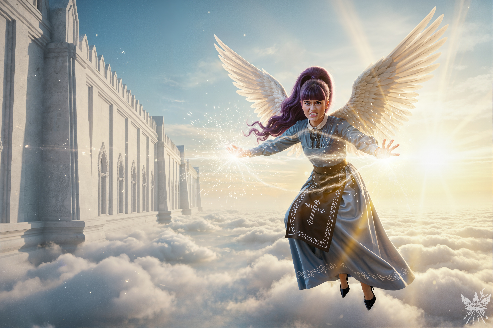

第76章 天国の門
カナ・アナベラルは、ずる賢い悪だくみが何より好きだった。細い声のちっちゃなポルターガイストの目は、また誰かを煙に巻けるとなると、文字どおりきらきらと輝き出す。今回の標的は、異変解決に乗り出した博麗霊夢と霧雨魔理沙、そしてリストに加えた東風谷早苗の三人。閻魔大審議会を龍神と敵対させるため、メデアは死神・小野塚小町に変身し、人間の里にあった龍神の石像を粉砕した。そして今度は、この騒動に首を突っ込んでくるであろう三人の「英雄」たちを混乱させるべく、偽情報に塗れた手紙を送りつけるのだ。
（こんな姑息な手段を使わなくてもいいはずなのに。かつてアレクサンドロス大王を輩出したアルゲアデス王朝の末裔たる、この私が……）
自嘲めいた感情が心をよぎる。しかし、目的のためには手段を選んでいられない。死そのものと戦い、閻魔大審議会の支配を打ち砕く。それが実現すれば、人々は転生するたびに記憶を消去されるという永遠の苦しみから解放されるのだ。もともとはカナの狂気じみた野望だったが、利害が一致した今のメデアたちには、奇妙な連帯感すら芽生えていた。
「ねぇ、カナ。霊夢と魔理沙を白玉楼で鉢合わせたら、どうなるかしら？」
メデアが悪戯っぽく笑いかけると、カナは小気味よい声で吹き出した。
「じゃあ、早苗は菊界にでも観光に行かせちゃいましょう。情報が多すぎて、きっと頭がパンクするわよ」
廊下を歩いていると、物陰に潜む紫色の人影に気づいた。くるみだ。彼女の視線は、カナの開かれた首筋に釘付けになっている。メデアは苦笑しながら近づき、そっと声をかけた。
「ごめんね、くるみ。この子は太郎とは違うの。いつか、素敵な人を見つけられるといいわね」
言葉をかけられたくるみは顔を真っ赤にして黙り込む。彼女の震える手には、真新しい新聞が握られていた。
（私たちの記事、もう載っているようね）
自室へ戻ると、机の上には白い便箋とインク壷が用意されていた。
「待って、メデア。私に書かせて」
カナは前のめりになり、しなやかな指先で筆を取った。
「筆跡まで真似る気？」
「霊夢宛ては魔理沙の筆跡で、魔理沙宛ては霊夢の筆跡の方が効果的でしょ？ 最高の『お見合い』作戦なんだから」
カナは自信たっぷりにウィンクをして見せた。
「ふふ、さすがね。プロの偽装工作員だわ」
「ふふ、好きなことにはとことん拘る性分なのよ」
淀みない筆運びで、あっという間に二通の手紙が仕上がった。
「でも……署名はないのね？」
「必要ないわよ。『秘密の手紙』だもの。あの二人、白玉楼で鉢合わせたらきっと疑心暗鬼になって手紙を奪い合って……決闘騒ぎになるかもね。ああ、想像しただけでゾクゾクするわ」
楽しくてたまらないというカナの悪い顔を見て、メデアは満足して頷いた。
「お疲れ様、完璧ね。じゃあ、早苗宛ては私が書くわ」
「いいわよ。あら、メデアって字が綺麗ね。どこで習ったの？」
カナがメデアの手元を興味深そうに覗き込む。
「召喚する悪魔の名前を汚い字で書いてみたらどうなると思う？ 命に関わるわ」
メデアは慣れた手つきで文字を走らせた。早苗には『新地獄』と呼ばれる場所へ、案内人を連れてくるよう仄めかしておく。
カナがベッドの天蓋にぶら下がって遊んでいる間に、メデアは三通の封筒に封蝋を落とした。
（憂鬱の欠片もない。まるで普通の思春期の少女みたいだわ）
1階の薄暗い回廊へ降りると、手持ち無沙汰にしている三人のサキュバスのメイドたちを見つけた。
「ねえ、ちょっと儲け話があるんだけど、どうかしら？」
「別にいいけど……お客さんには、三人セットでしか受けないってちゃんと伝えてよ？」
いつものような業務だと勘違いしている彼女たちを見て、カナは吹き出しそうになるのを手で必死に押さえ込んだ。メデアは静かに白い封筒を差し出す。
「残念だけど、そっちの仕事じゃないわ。この手紙を、三人の宛先にこっそり届けてほしいの。『こっそり』の意味、わかるわよね？」
少女たちは少し拍子抜けした様子で、勢いよく頷いた。
「いくらもらえるのさ？」
「一人150シンキずつ。でも、今はその半分だけ。残りは任務完了後よ。ただし、宛先には絶対に気づかれないようにね。しくじれば、お金をもらえないどころか命に関わるわよ」
冷たい石壁に囲まれた空間に、微かな熱と古いベルベットの匂いが混じる。秘密めいた取引にはうってつけの空気感の中、メイドたちは当惑したように顔を見合わせ、少し頬を赤らめた。

雇われたメイドたちは手紙をひったくるように受け取ると、窓から正面玄関を避けて夜の闇へと飛び出していった。
「さあ、『ちゆりちゃん』。あの子たちが働いている間に、幽香に会いに行きましょうか」
「そういえば、どうしてまだ顔を出してくれないのかしら。ここの女主人なら、普通は挨拶くらい来るでしょう？」
「そうとも限らないわ。一応泊めてくれてはいるけど、私にはあまり興味がないみたいだから」
正面玄関のそばでリンゴをかじっていたエリーに尋ねると、
「幽香お嬢様なら庭さ」
とだけぶっきらぼうに答え、こちらへリンゴを放ってきた。
屋敷の裏口を抜けながら、メデアはカナに耳打ちする。
「このリンゴ……私たちがあまりにもうっとうしいから、口封じに食べさせようとしてるんじゃないかしら。エリーったら、無意識のうちにね」
「無意識？ 甘いわよメデア。わざとよ、わざと」
カナは明るい声で笑い飛ばした。
屋敷の東側へ回り込むと、空気が一変した。可愛らしい小庭園を想像していたメデアの息が詰まる。そこは、むせ返るようなエキゾチックな植物の香りと、まとわりつくような熱気が支配する広大な楽園だった。藤の隣に竹が群生し、アーモンドとバナナが狂ったように実をつけている。季節外れの混沌とした景色の奥に、カナが黄色い海を指さした。地平線まで続く、圧倒的な生命力を持ったヒマワリ畑だ。
（……あそこに、幽香がいる）
幻想郷で最強の妖怪の一人は、炎天下の中で黙々と雑草をむしっていた。近づく二人に気づくと、幽香は作業の手を止め、値踏みするような視線を向けてきた。
「あら、この子がメデアの恋人？ で、私に結婚の許可でももらいに来たのかしら？」
メデアは、彼女の書斎に積み上げられていたおびただしい数の官能小説を思い出し、皮肉を込めて返した。
「ええ、そうかもしれませんね。ところで、他の世界へ送ってくれるというお話ですが……天界へ行きたいんです。お願いできますか？」
「ふふ……『送る』のは得意よ。行き先は、地獄でも天国でもね」
「こちらは友人の北白河ちゆりです」
メデアが紹介すると、カナはちゆりの姿で快活に頭を下げた。
「今すぐ天界に？ 小娘、あのナマズのいる湖で泳いでみた方が早いわよ。あっという間に天界へ行けるわ。……あら、そうだったわね。あんた、人間の世界を地獄に変えてしまった張本人だったわ。すっかり忘れていたわ。あんたに天国なんて似合わない。閻魔に地獄へ落とされるのがお似合いよ」
幽香は残酷な笑みを浮かべ、じっとメデアを見つめた。
「……まあ、仕方ないわね。手伝ってあげる。その代わり、少しばかり手伝ってちょうだい」
（……また面倒なことになりそうね）
「ちょうど3畝分の草むしりが残っているの。手伝ってくれるわよね？」

容赦なく照りつける太陽が首筋を焼き、背負わされた麻袋の重みが肩に深く食い込む。引き抜かれたばかりの青臭い雑草の匂いと、乾いた土の埃が喉にへばりついて息苦しい。額から滴る汗を拭う余裕すらなく、メデアたちはただ黙々と這いつくばって土を掘り返し続けた。その数メートル上空を、優雅に日傘を差した支配者が涼しい顔で浮遊していく。絶対的な格差を見せつけるようなその沈黙の行軍は、優に30分は続いた。
重労働を終えて屋敷に戻ると、幽香はエリーに儀式の準備を命じ、姿を消した。待っている間にサキュバスたちから完了報告を受け、残りの報酬を支払う。
「嘘は言ってないみたいね」
と、カナも満足そうだ。
儀式の間。幽香がメデアとカナに向き直る。
「準備はいいかしら？ 通路を開くのは簡単だけど、勘違いしないでよね。幻想郷の金は天界じゃ『汚れたもの』で通らないから、持って行っても無駄よ（嘘）。私はスポンサーじゃないわ。それじゃあ、行っといで」
ヴィシュッダ・チャクラの恩恵で、メデアにはその言葉が嘘だとすぐに分かった。隣のカナも気づいたようで、悪戯っぽくメデアにウィンクを送る。
（ただのケチね）
幽香が白いパラソルを掲げると、魔法陣がまばゆい光を放ち、強烈な引力がメデアたちの身体を上空へと引きずり上げた。

景色が切り替わった瞬間、急激な温度変化に肺が悲鳴を上げた。氷のように冷たく薄い空気が肌を刺し、地上のあらゆる喧騒を飲み込むような真空の静寂が耳鳴りを起こさせる。足元には底知れぬ乳白色の雲海が広がり、果てしなく続く白亜の外壁が、メデアたちを矮小な存在であると無言で嘲笑っているようだった。
「さあ、行こうか。龍ちゃんが正確にどこに住んでるかは知らないけど、天界の都に行けば何か手がかりが見つかるはずだ」
カナがちゆりの口調で言いながら、服に染み付いた冷気を払う。
メデアはポケットから卵を取り出しジェット箒に変えようとしたが、具現化したのはただの自転車だった。
「Bクラスの世界だから、魔法に制限がかかっているのかもしれないわね」
弾幕は撃てるようだが、これでは都まで日が暮れてしまう。雲の道を歩き続けると、季節外れの桃の木々が見えてきた。柿色の服を着た男女が何かの作業をしているのを横目に進むと、やがて巨大な黄金の門が立ち塞がった。
そのまま中へ入ろうとした瞬間、鈍い地響きと共に門が閉ざされた。
「待て、迷える魂よ。通行証を見せよ」

雲海の上に立ちはだかったのは、見上げるほどの巨体だった。神聖な光を鋭く反射する装甲が目を焼き、こちらに突き出された掌からは、物理的な暴力を超えた絶対的な『拒絶』の圧力が放射されている。一言の反論すら許さない威圧感に、思わず足がすくんだ。
「通行証？ 私たちは永江衣玖に呼ばれて来たのだけれど……」
カナが穏やかな声で交渉を試みる。
「罪深き魂よ、言葉遣いに気をつけよ。登録のない者を有頂天市に入れるわけにはいかぬ。亡霊として天国へ送られたのなら、閻魔大審議会から発行された通行証を提示せよ。仏か菩薩、あるいは天使であれば、それに対応する書類が必要だ」
取り付く島もない。メデアたちは恭しく頭を下げ、大天使の姿が消えるまで壁沿いに後退した。
「審議会の許可証を持った亡霊か、仏か天使か……。誰かに変身しないと、この都には入れないみたいね」
カナが声を潜める。
「でも、明日まで二人とも変身できないわ。別の方法を考えないと。……さっきの僧侶たち、見た？」
「もしかしたら、通行証を手に入れる方法を知ってるかもね」
打開策を見出した矢先、メデアの足首を鋭い痛みが掠めた。反射的に振り返る。
「見つけたぞ、罪深き人間！」

静寂に包まれていた高高度の空気が、不快な放電音と共にひび割れた。焦げたオゾンの匂いが鼻を突き、肌の表面で静電気の産毛が逆立つ。そこに浮かんでいたのは、かつて魔界の堕ちたる神殿で刃を交えたあの天使の少女だった。一切の慈悲を持たない、純粋で暴力的な殺意がメデアたちに向けられている。
「今度こそ逃がさん！」
「ちょっと待って。誤解よ、私たちは敵じゃないわ」
カナがヴィシュッダ・チャクラの説得力を込めて微笑みかける。だが、その言葉は完全に弾き返された。
「冗談ではない！ 貴様らにはお仕置きだ！ 天界の警備隊に突き出し、閻魔に裁かせてやる！ 手間を取らせるな！」
少女は一切の対話を拒絶し、破滅的なエネルギーを収束させながら戦闘態勢に入った。天界の冷たい空気の中、再び避けられない戦いの火蓋が切って落とされた。